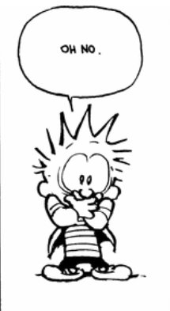

Stay calm, don’t be afraid, don’t panic, don’t be overcome by fear.
We can do this! Fear doesn’t have to beat us!
There is certainly no lack of cheerleading telling us to not be afraid, is there?
There are plenty of good reasons to want to get rid of fear too, as we hear about its many negative effects and dire consequences. It’s certainly important that we study and learn ways to vanquish it.
Fear is bad, n’kay?
Never mind that at the same time, the unending focus on panic has increased -- memes, daily counts of the dead, bar charts comparing this to that. So many pictures of sick folks literally lining the floors in hospitals all over the world. Look at it all!
But stop it. Be calm. No fear.
I don’t know about you but here in quarantine in my own home, the trash bin shows increased evidence of comfort eating, along with the usually-not-but-now-worrisome envelopes from bill statements, as reports continually feature the enormous financial ruin accompanying all that death.
And it’s not even as if we can turn to our usual ways of managing fear.
Overeating isn’t necessarily an option (the food’s gotta last), many aren’t working, alcohol and marijuana aren't readily available. Shopping, exercise, escaping the kids and spouse - no longer so easy. Religious places closed, parties, bars…
When we think about it, what’s left to get the juices going but fear? For many folks, it’s all that’s left to make this life interesting right now.
So here’s a scandalous proposal...
Why not just be afraid? Go for it.
I mean, yes, we don’t like it.
But if we could think from consciousness’ point of view, or from “the witness’ ” point of view…
Isn’t fear equally as fascinating as love or boredom or shame?
Isn't it possible that if humans could expand perspective out from our own navels for a bit, we might discover that other than Don’t like,
Fear may be turn out to be just as good a feeling as any other?
That may already feel like a relief. Since being allowed to be what we are is so much less work than fighting it.
Besides, it could be that no matter what meditation, affirmations, “we can do its”, inquiries, or intentions we may try…
At some point fear is simply unavoidable anyway.
I saw this myself 10 days ago when I couldn’t breathe.
No amount of meditation or enlightenment stops the automatic response of the self to want its own infinite, never-ending survival.
Yes we fear losing what we think we know, what we think we have, and the long-held delusion that we’ve been in control.
But most of all we fear losing life, this personal story of individual-me. The self greatly fears that it will cease to be. It wants to stay.
Unsurprisingly the self finds the possibility of its own vanishing, alarming. That alarm is not going to disappear just because we say, “We can do this!”
So even if it turns out that What We Truly Are does continue to exist after the self-story is gone,
And even if that might also be calming for the self in the here and now,
Regardless…
Fear is built in as part of this human existence.
Now to be clear, I’m not saying embrace it, I’m not saying sit with it, I’m not saying wallow. I'm also not saying diminish, bypass, or ignore it.
I’m just saying fight fear or not, try to make fear vanish or not…
When it wants to be, there it is, anyway.
The rapid heartbeat, the sense of shallow breathing, the racing thoughts and images of nothingness.
Yes.
Maybe this is the end. Maybe it isn’t.
Maybe we're afraid. Maybe we're very afraid.
Either way, maybe
as an experience,
as it is,
it can be
enough.
PS: ❤️ I wish you health, if possible, and a richly-felt experience, and all my hopes that this ride may continue for you for a good while longer. ❤️
Get your every week.
"Is there any meaning in my life that the inevitable death awaiting me does not destroy?"
--Tolstoy
"This parrot is no more. It has ceased to be. It is bereft of life. It rests in peace. This, is an ex parrot."
--Monty Python
